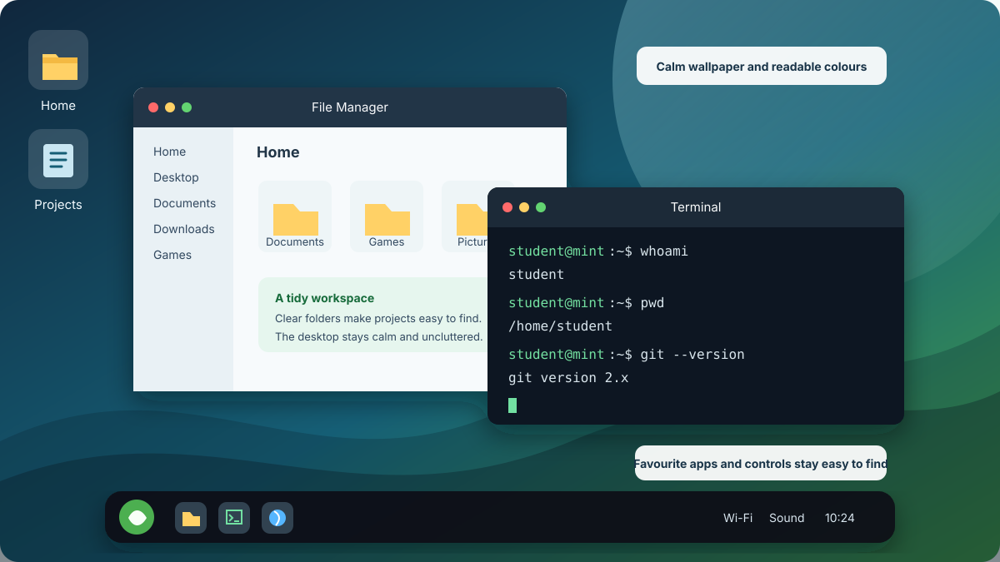

Set Up Your Accounts and Explore Linux
The main goal of this lesson is simple: have fun with Linux and make the computer useful. The website is your lesson and reference. Each Google Doc below is a separate submission artifact.
- Assignment 1: Make Linux Mint Xfce Your Own
- Assignment 2: Terminal Quest: WSL and Mac Basics
- Assignment 3: Bashcrawl Terminal Adventure
Complete and submit each assignment separately. Do not combine their evidence or submit a separate history text file.
Learning goals
By the end of this page:
- I will be able to create and test safe user accounts on an assigned classroom computer.
- I will be able to personalize Linux Mint with the graphical user interface (GUI).
- I will be able to open the correct terminal on Windows, Linux, or Mac and use beginner commands.
- I will be able to create a folder and file, inspect processes, and review command history safely.
- I will be able to download and explore Bashcrawl with Git.
Before you begin
You may need:
- an assigned classroom computer with Linux Mint installed;
- the
minclassroom account and the classroom account password supplied directly by your teacher; - the account names or aliases supplied for students who share the computer;
- classroom Wi-Fi credentials supplied directly by your teacher; and
- the Linux Start Here class slides.
Do not change accounts or files on another computer. Do not use guest Wi-Fi, scan the school network, or try to connect to another person’s computer. Never put passwords, Wi-Fi credentials, student numbers, access tokens, recovery information, or other private information in a Google Doc, screenshot, or command history.
Extension work: create and test classroom accounts
This account activity supports the shared Linux computers, but it is not required evidence for Assignments 1, 2, or 3 unless your teacher assigns it separately.
Sign in as min. Open Menu > System > Users and Groups, then select Unlock. Use the classroom account password supplied directly by your teacher when Linux asks for administrator approval.
Create these three accounts only when your teacher has assigned the computer and approved the account names:
| Account | Username | Account type | Password |
|---|---|---|---|
| Your account | Create a unique, school-appropriate username with no spaces | Administrator | Create a private password you can remember |
| Other student 1 | Use the name or alias supplied by your teacher | Standard | Use the temporary password supplied directly by your teacher |
| Other student 2 | Use the name or alias supplied by your teacher | Standard | Use the temporary password supplied directly by your teacher |
Your username should not contain your student number, email address, or full legal name. Record usernames only if your teacher asks. Never record a password. Keep the min account as the classroom recovery account.
To test the accounts, sign out and sign in to each approved account. Confirm that each account opens normally and has a separate home folder. Sign back in to your own account before continuing. If an account does not work or an unexpected administrator warning appears, stop and ask your teacher for help.
Assignment 1: Make Linux Mint Xfce Your Own
If anything here is unclear, incomplete, or could be explained better, improve it in your own copy. Use Suggesting mode if it is available. Otherwise, add a clearly labelled “Suggested improvement” with your revised wording. Include one sentence explaining why your version is clearer or more useful. Do not remove required work. Mr. A will review your change and may update the course website and future assignment documents if he agrees it helps. Improving a real instruction accurately is one way to demonstrate Level 4+ thinking.
Part 2: make Linux feel like your computer
Make a copy of Make Linux Mint Xfce Your Own.
Submit ONE completed Google Doc in Google Classroom. It must contain a BEFORE screenshot, an AFTER screenshot, and all five short reflection answers. Do not attach the screenshots as separate files.
1. Save your BEFORE screenshot
Do this before changing any settings. Sign in to your own Linux account and show the full desktop with its wallpaper and bottom panel visible. Press Print Screen (PrtSc). If nothing happens, try Fn + PrtSc or search the application menu for Screenshot. Save the picture in your Pictures folder and insert it into the assignment Google Doc.

Show the whole desktop, not a cropped corner. Keep the wallpaper and full panel visible. This reference image is not a student submission. Image source: Linuxiac.
2. Get inspiration from Xfce makeovers
Watch the parts that interest you. Use the built-in settings in the next section. You do not need to copy either design, download a theme, run terminal commands, or install Compiz.
Customize Your Linux Mint XFCE: A Simple Guide by Specter-3924 shows a complete Linux Mint Xfce desktop makeover.
Making XFCE Look Better by NH Soft: start at 3:33 for wallpaper, 7:32 for themes, and 12:49 for the panel. Skip downloads, terminal commands, and the later Compiz effects.
Three realistic built-in-only design ideas
Pick one direction or mix ideas. Theme names can vary slightly between classroom computers.
| Design direction | Wallpaper | Theme or icons | Panel |
|---|---|---|---|
| Calm study desktop | Choose a quiet nature or abstract built-in image | Try a light Mint-Y style and a simple built-in icon set | Keep it at the bottom and set a comfortable row size around 38 to 42 pixels |
| Dark coding desktop | Choose a darker built-in image with little visual clutter | Try a built-in dark Mint-Y style and readable icons | Move it to the top or keep it at the bottom, then make it slightly taller |
| Easy-to-see desktop | Choose an uncluttered image that does not hide labels | Choose the clearest high-contrast built-in style available | Increase the row size to about 46 to 52 pixels and keep the menu, network, sound, and clock easy to find |

This course example shows one possible finished direction. Your design should reflect your own choices and remain readable.
3. Make the three required changes
Use the settings already included with Linux Mint. Do not download themes, scripts, packages, or desktop effects without teacher permission.
Change A: wallpaper

- Right-click an empty part of the desktop.
- Select Desktop Settings, then Background.
- Choose a different built-in picture. Close the window to see the result.
Example: choose a simple image whose light and dark areas still let you read desktop icon labels. Screenshot source: It’s FOSS.
Change B: theme or icons

- Open Menu > Settings > Appearance. If you cannot find it, type
Appearanceinto the menu search box. - Open the Style tab and try a different built-in style. This changes application windows, menus, buttons, and colours.
- You may also open the Icons tab and choose a different built-in icon set. Keep labels and controls readable.
Example: compare one light and one dark Mint-Y variant, then keep the one that gives better contrast with your wallpaper. Screenshot source: Xfce Project.
Change C: panel

- Right-click the bottom panel, which is the bar with the menu and clock.
- Choose Panel > Panel Preferences. You can also search for
Panelin the menu. - Change the Row size first. A small change, such as 36 pixels to 42 pixels, is easy to see and easy to reverse.
- If you want another change, move the panel to the top or adjust its appearance. Close Panel Preferences when finished.
Do not delete the panel or remove the application menu, network, sound, or clock controls. Screenshot source: It’s FOSS.
If a setting looks wrong, return to the same settings window and change it back. If you cannot restore the panel or essential controls, stop and ask for help.
4. Save your AFTER screenshot
Make sure the updated wallpaper and panel are visible. You may leave File Manager open so the theme is also visible. Take another screenshot and insert it into the same Google Doc.
5. Answer all five reflection questions
In your assignment Google Doc, answer:
- What wallpaper did you choose, and where did you change it?
- What theme or icon change did you make, and which setting did you use?
- What did you change about the panel, and how did you do it?
- Which change made the desktop look better or easier to use, and why?
- Did anything go wrong, and how did you fix it? Write “Nothing went wrong” if appropriate.
After completing the required work, you may change fonts or pointer size, add a favourite application shortcut, arrange desktop icons, or investigate another built-in appearance setting. Do not install a theme or desktop effect without permission.
Extension work: network and software exploration
These activities build useful Linux skills, but they are not required evidence for Assignments 1, 2, or 3 unless your teacher assigns them separately.
Check the network with the GUI
- Select the network icon in the panel.
- Connect using credentials supplied directly by your teacher. Do not use guest Wi-Fi.
- Open the connection information or network settings.
- Identify whether the connection uses Wi-Fi or Ethernet. Keep local addresses in private classroom work only.
- Open the browser and visit the TEJ Notes website.
If a warning appears, credentials are rejected, or a result differs significantly from these instructions, stop and ask for help. Do not change security settings or scan the network.
Install approved software
Open Software Manager from the application menu. Search for Git and install it only if it is missing and your teacher has approved the installation. You may also choose one school-appropriate game or useful application, read its description and system requirements, and ask for approval before installing it.
Use Software Manager, an operating system’s official documentation, or the official Bashcrawl GitLab repository. Do not paste installation commands from advertisements, comments, forums, or unknown sites. If installation requires administrator access and you do not have permission, stop and ask your teacher.
Assignment 2: Terminal Quest: WSL and Mac Basics
If anything here is unclear, incomplete, or could be explained better, improve it in your own copy. Use Suggesting mode if it is available. Otherwise, add a clearly labelled “Suggested improvement” with your revised wording. Include one sentence explaining why your version is clearer or more useful. Do not remove required work. Mr. A will review your change and may update the course website and future assignment documents if he agrees it helps. Improving a real instruction accurately is one way to demonstrate Level 4+ thinking.
Part 5: meet the terminal
Make a copy of Terminal Quest: WSL and Mac Basics.
Submit ONE completed Google Doc in Google Classroom. Paste the complete, reviewed command history into that document. Do not submit a separate history text file.
1. Open the correct terminal
Windows with WSL
Open Start and search for WSL, Ubuntu, or the name of the installed Linux distribution. Open the matching app. Run the Linux assignment commands there, not in PowerShell.
If WSL is not installed, ask the computer owner or teacher for permission. Installation requires administrator access and may require a restart. With permission, open PowerShell as Administrator and run:
INPUT
wsl --installRestart if Windows asks. If installation is blocked, a security warning appears, or you are unsure which distribution opened, stop and ask for help. Follow the official Microsoft WSL installation guide when needed.
Linux Mint or Ubuntu
Press Ctrl + Alt + T, or search the application menu for Terminal. WSL is not needed on a Linux computer.
Mac
Press Command + Space, search for Terminal, and press Return. You can also open Applications > Utilities > Terminal.
2. Identify the account and current folder
Run one command at a time. Read the result and enter the requested answer in your Google Doc.
INPUT
whoamiINPUT
hostnameINPUT
pwdINPUT
lsINPUT
ls -aEXAMPLE OUTPUT
Desktop Documents Downloads Music PicturesYour username, computer name, path, files, and hidden items will differ. A shell prompt may end with $ or %; do not type that prompt symbol as part of a command.
3. Investigate the operating system
INPUT
uname -sINPUT
uname -mINPUT
df -h .INPUT
uptimeRecord the system name, machine or CPU type, available space, and uptime in your Google Doc. On a Mac, the system name may be Darwin. In WSL, the system name is normally Linux because Linux is running inside Windows.
4. Create the terminal-quest folder and hello.txt
Run each command separately:
INPUT
cd ~INPUT
mkdir -p terminal-questINPUT
cd terminal-questINPUT
pwdINPUT
echo Hello from my computer > hello.txtINPUT
lsINPUT
cat hello.txtEXAMPLE OUTPUT
Hello from my computerReturn to your home folder and confirm your location:
INPUT
cd ~INPUT
pwd5. View running processes
On WSL, Linux Mint, or Ubuntu, try:
INPUT
htopIf htop is not installed, use top, or ask permission before installing software. On Ubuntu-based systems, the approved installation commands are:
INPUT
sudo apt updateINPUT
sudo apt install htop -yOn a Mac, use htop only if it is already installed. Otherwise run:
INPUT
topPress q to leave htop or top. Observe one CPU and one memory detail. Never end an unfamiliar process. If installation is blocked or asks for access you do not have, use top and ask for help.
6. Review and copy the complete command history
History contains commands, not their output. Review it before copying. Remove or redact passwords, tokens, personal names, private paths, Wi-Fi credentials, and other private information. If you see a password or token, do not paste it. Stop and ask for help, and change any exposed credential.
Windows WSL, Linux Mint, or Ubuntu using Bash
Review the history:
INPUT
historyOn Windows WSL, copy the complete history to the Windows clipboard:
INPUT
history | clip.exeOn Linux Mint or Ubuntu, first check the desktop session:
INPUT
echo $XDG_SESSION_TYPEIf the result is x11, ask permission to install xclip if needed, then copy:
INPUT
sudo apt install xclip -yINPUT
history | xclip -selection clipboardIf the result is wayland, ask permission to install wl-clipboard if needed, then copy:
INPUT
sudo apt install wl-clipboard -yINPUT
history | wl-copyMac using the default zsh shell
Review the complete history:
INPUT
history 1Copy it to the Mac clipboard:
INPUT
history 1 | pbcopyIf the Mac uses Bash instead of zsh, use history and history | pbcopy.
Paste the complete, reviewed history into the labelled box in your Terminal Quest Google Doc. Confirm that it includes the activities you tried. Review the pasted text again before submitting. Submit only that completed Google Doc.
Assignment 3: Bashcrawl Terminal Adventure
If anything here is unclear, incomplete, or could be explained better, improve it in your own copy. Use Suggesting mode if it is available. Otherwise, add a clearly labelled “Suggested improvement” with your revised wording. Include one sentence explaining why your version is clearer or more useful. Do not remove required work. Mr. A will review your change and may update the course website and future assignment documents if he agrees it helps. Improving a real instruction accurately is one way to demonstrate Level 4+ thinking.
Part 6: clone and play Bashcrawl
Make a copy of Bashcrawl Terminal Adventure.
Submit ONE completed Google Doc with all four reflection answers and at least one readable terminal screenshot. No history file is required.
Bashcrawl is a terminal adventure. Folders are rooms and files contain clues. There is no required final room and no time limit. Explore for as long as you can, return another day if you want, and record the furthest room you reached.
1. Open Terminal and check Git
- Windows: Open WSL, Ubuntu, or the installed Linux distribution from Start.
- Linux Mint or Ubuntu: Press Ctrl + Alt + T, or open Terminal from the application menu.
- Mac: Press Command + Space, search for Terminal, and press Return.
INPUT
git --versionEXAMPLE OUTPUT
git version 2.43.0Your version may differ. If Git is missing on WSL, Ubuntu, or Linux Mint, ask permission before running sudo apt update and sudo apt install git -y. On a Mac, follow the Apple Command Line Tools prompt only with the computer owner’s permission. Stop and ask for help if installation is blocked.
2. Download and start Bashcrawl
Run one command at a time:
INPUT
cd ~INPUT
mkdir -p GamesINPUT
cd GamesINPUT
git clone https://gitlab.com/slackermedia/bashcrawl.gitIf Bashcrawl is already downloaded in ~/Games, skip the clone command.
INPUT
cd bashcrawl/entranceINPUT
cat scrollgit clone downloads a working copy of the repository into a new folder. It does not need administrator access. Never add sudo to that command.
3. Explore the dungeon
Useful commands include:
INPUT
pwdINPUT
lsINPUT
ls -aINPUT
cat filenameINPUT
cd directoryINPUT
cd ..Replace filename and directory with names you actually see. Read every scroll file you find. If a command does not work, read the message, try ls or ls -a, reread the clue, or go back one room. Do not use sudo inside the game.
4. Record and submit your progress
In the Bashcrawl Google Doc:
- Record the furthest room or path you reached. Run
pwdin that room if you need the path. - Answer what clue, object, or surprise you discovered.
- Name one command you learned or used and explain what it does.
- Explain what you tried when you got stuck and whether it worked.
- Insert at least one readable screenshot showing the terminal at your furthest room or an interesting clue.
Submit ONE completed Google Doc in Google Classroom. There is no required final room, no time limit, and no history file for this assignment.
Helpful resources
- Review the Linux Start Here class slides for the installation, account, terminal, and Bashcrawl sequence.
- Read the official Bashcrawl instructions if you need help starting the game.
- Review the Bashcrawl project on GitLab to see where the game came from.
- Read the Git documentation for
git clonewhen you want to understand the download command in more detail. - Use the Ubuntu command-line tutorial for another beginner-friendly introduction to the terminal.
- Read the GNU Bash explanation of command history to learn what Bash saves.
- Explore the school-appropriate Learn Linux TV YouTube channel for beginner Linux and terminal demonstrations.
- Try Linux Journey for short lessons about commands, permissions, processes, and networking.
- Try GameShell or OverTheWire Bandit only with teacher approval.
Review
You can now separate three different kinds of evidence: visual customization belongs in Make Linux Mint Xfce Your Own, complete reviewed command history belongs inside Terminal Quest, and Bashcrawl progress belongs in Bashcrawl Terminal Adventure. Each assignment is submitted as one Google Doc.